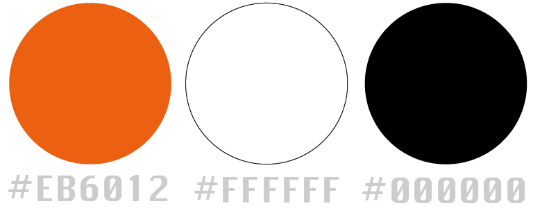

🐧 Personal Project: Happy to celebrate 90 years of Penguin book design.
🐧 Tools: Adobe Illustrator, InDesign, PhotoShop
🐧 This page highlights my expertise in visual identity across digital, print, and book cover design.
🐧 #PRHDesignAward
🐧 Colour Chosen 📚
🐧 Design Brief 📚
Bold: The format was unafraid of bucking the more traditional decorative illustrative conventions of book design, but the approach was not without criticism.
Distinctive: The bold, type-forward colour code.
Mass-market: produced at scale, replicable and affordable for readers.
Image source: Penguin Random House
🐧 Sketch & Design 📚
As outlined in the design brief, I researched the previous book cover winner. Additionally, I continued experimenting and sought feedback from others throughout the process.
Below are my earlier concepts and designs:
🐧 Key Word: Gift wrapping and 90.
🐧 First Experiment 📚

Feedback: It's bold, but I don't see any connection to the 90 years of celebration, nor do the colors distinctly represent PRH. The patterns are fine, but the concept needs to be clearer.
🐧 Second Experiment 📚

Feedback: While it strays from the main topic, I truly appreciate this type of design. It leans more toward a holographic abstract style.
🐧 Final Submission 📚
Here is the final result, and I’m quite pleased with how it turned out. I believe the elements are bold, distinctive, and appeal to the mass market.
The white ribbon can also serve as a metaphor, symbolizing the penguin’s long journey over the years and how books continually offer humanity endless paths for thought and exploration.